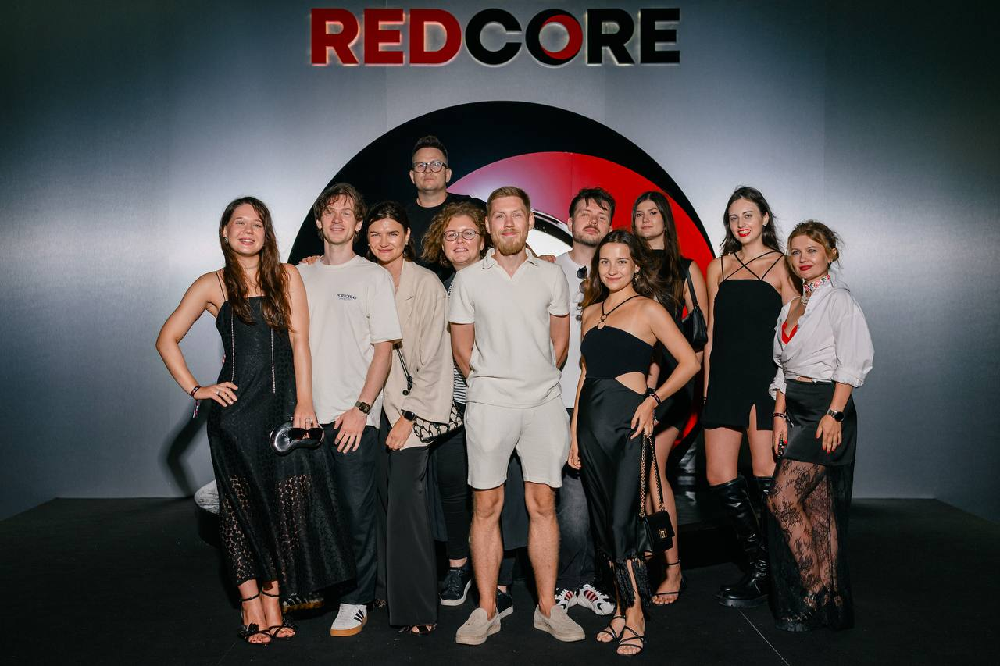

Redcore Holding ↗ · Growth Unit
Business Operations
Manager
- Designed and optimized the operating model for end-to-end A/B testing, enabling teams to identify and validate financial and marketing growth opportunities.
- Built operational intelligence and reporting processes to improve experiment visibility, prioritization, and decision-making; reduced experiment cycle time by [X]%.
- Led cross-functional business and technical initiatives to increase feature adoption and remove product and platform bottlenecks.
- Partnered with Product, Engineering, Marketing, Data, and Finance teams to translate business priorities into actionable roadmaps, delivery plans, and measurable outcomes.
- Established governance for experiment planning, execution, performance monitoring, and knowledge sharing.
